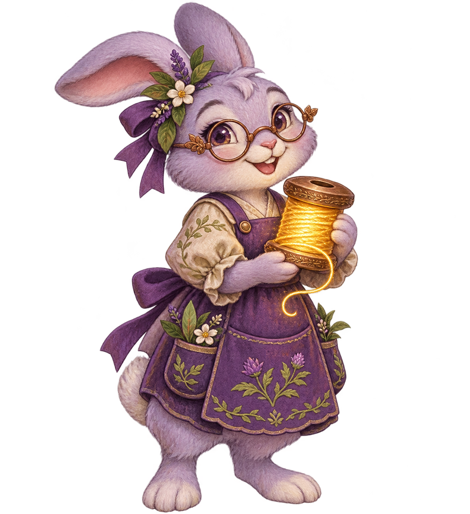

조각을 골라 360° 꽃과 목표 넓이를 완성하세요.
달빛 조각
누르면 꽃에 더해져요. 여분은 남겨도 돼요.
넓이와 금실 계산
금실은 둥근 호 부분에만 둘러요. 반지름 두 변은 금실에 포함하지 않아요. 각 조각의 호 길이를 더한 값이며, 꽃 전체의 둘레와는 달라요.

조각을 골라 360° 꽃과 목표 넓이를 완성하세요.
누르면 꽃에 더해져요. 여분은 남겨도 돼요.
금실은 둥근 호 부분에만 둘러요. 반지름 두 변은 금실에 포함하지 않아요. 각 조각의 호 길이를 더한 값이며, 꽃 전체의 둘레와는 달라요.
